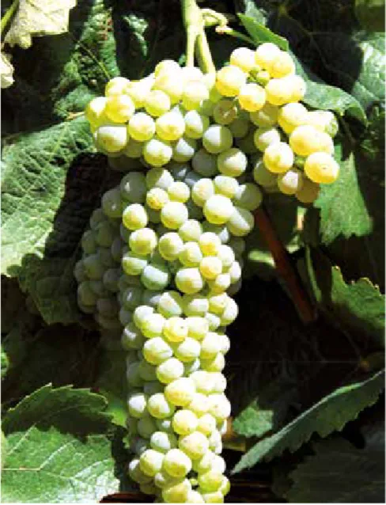

Kapitel 3 · Die portugiesischen Rebsorten
Loureiro (W)
Herkunft:
Sehr alte Sorte aus dem Nordwesten Portugals (Fluss Lima). Lacerda Lobo (1790) erwähnte eine Sorte namens Loureiras in Melgaço und in Vila Nova de Cerveira (Minho). Vila Maior (1875) verzeichnete sie als Loureira am Lima. In Spanien wird die Sorte seit dem Ende des 20. Jahrhunderts angebaut. Hauptverbreitung: fast das gesamte Weinbaugebiet des Minho, besonders in den Unterregionen um Ponte de Lima; ausgenommen die Unterregionen Basto und Amarante sowie die Kreise Baião, Cinfães und Resende.
Weinmerkmale:
Säurereich, intensive Aromen und frisch, verliert aber mit dem Alter seine frischen, blumigen und fruchtigen Eigenschaften. Die aromatische Intensität verleiht dem jungen Sortenwein viel Ausdruck, der an seinen Namen („der Lorbeer“) erinnert, verstärkt durch Anklänge an Limette, Orange und Akazienblüte sowie die Fruchtigkeit von Orange und Pfirsich. Gute, ausgewogene Struktur, langer Abgang.
Regionale Einstufung:

DOC-Qualitätswein: Vinho Verde, Unterregionen Sousa, Ave, Cávado, Lima, Monção, Paiva.
Landwein: Minho, Beiras, Terras do Sado. DO Galicien.
Morphologie:
Junger Trieb (Form der Triebspitze): offen, mit karminroter Spitze. Dichte, flaumige Behaarung.
Junges Blatt: grün, mit dichter, flaumiger Behaarung auf der Unterseite.
Junger Trieb: grün mit grünen Knospen.
Blütenstand (Blütengeschlecht): zwittrig.
Ausgewachsenes Blatt: mittelgroß, fünfeckig, fünflappig; mittelgrüne, unregelmäßige Spreite, mittlere Blasigkeit der Oberseite, flaumige Behaarung mittlerer Dichte auf der Unterseite, kurze konvexe Zähne. Leicht offene V-förmige Stielbucht. Geschlossene U-förmige obere Seitenbuchten.
Traube: mittelgroß, konisch, geflügelt, mittlere Dichte, Stiel mittellang.
Beere: rund, mittelgroß, gelbgrün; Haut mittelstark, weiches Fruchtfleisch.
Phänologie:
Austrieb: früh, 1 Tag nach der Fernão Pires.
Blüte: mittelfrüh, 2 Tage nach der Fernão Pires.
Farbumschlag der Beere: spät, 5 Tage nach der Fernão Pires.
Lesereife der Beere: spät, zwei Wochen nach der Fernão Pires.
Vegetatives und agronomisches Potenzial:
Wuchskraft der Triebe: mittel.
Schnittholzgewicht: 1.000–2.500 kg/ha, je nach Klon und Region.
Triebhaltung (Wuchsform): halbaufrecht.
Länge der Internodien: mittel bis lang.
Trieblänge: lang.
Neigung zur Geiztriebbildung: gering.
Mehrfachaustrieb: gering.
Fruchtbarkeitsindex der Knospen: 1,5 Blütenstände je Trieb.
Ertrag: hoch bis sehr hoch (10.000–18.000 kg/ha). (Statistischer RNSV-Wert: 7,97 kg/Rebe, Mittel von mindestens 40 Klonen in Póvoa de Lanhoso über 4 Jahre.)
Ertragsbeständigkeit: stabil.
Gleichmäßigkeit des Ertrags: gleichmäßig.
Winkler-Index: 1.268.
Empfindlichkeit gegenüber abiotischen Faktoren: empfindlich gegenüber Sonne und Trockenheit.
Anfälligkeit für Pilzkrankheiten: anfällig für Oidium, Phomopsis viticola (Schwarzfleckenkrankheit) und Traubenbotrytis; mittlere Anfälligkeit für Peronospora.
Anfälligkeit für Schädlinge: Rote Spinne.
Traubengröße: groß (406–484 g) im Vinho Verde; mittel (270 g) in heißen, trockenen Zonen.
Dichte der Traube: mittel.
Beerenhaut: mittelstark.
Kerne je Beere: 2,6.
Erziehungssystem: für alle Erziehungssysteme geeignet. Traditionell an Pergolen oder Bäumen gezogen, passt sie sich heute gut an Kordon und Guyot an.
Bodenansprüche: tiefgründige Böden mittlerer Fruchtbarkeit mit ausreichender Feuchtigkeit.
Klimaansprüche: braucht Windschutz; verträgt relative Luftfeuchtigkeit sehr gut.
Bewässerung: bei extrem trockenem Boden möglich, aber unüblich.
Verrieseln/Kleinbeerigkeit: tritt gelegentlich auf.
Verderb reifer Beeren: empfindlich, leicht zu beschädigen.
Vogelfraß: gering.
Eignung für maschinelle Lese: bei niedrigeren Temperaturen möglich; die Trauben lösen sich leicht.
Önologie:
Weintyp: Vinho Verde.
Potenzieller Alkoholgehalt: abhängig von der Region. Im Minho hat der Most wenig Alkohol (11 % vol.), im Dão sind 13 % vol. üblich (V. Loureiro). (Statistischer RNSV-Wert: 10,22 % vol., Mittel von mindestens 40 Klonen in Braga über 8 Jahre.)
Natürliche Säure des Mostes: mittel bis hoch. Statistischer RNSV-Wert: 10,27 g/l (Mittel von mindestens 40 Klonen in Braga über 8 Jahre).
Oxidationsrisiko des Mostes: mittel.
Farbton des Weins: von Weiß bis intensivem Zitringelb.

Oxidationsrisiko des Weins: mittel.
Aromaprofil: hoher Gehalt an Terpenoiden (172 μg/l), vor allem α-Terpineol (123 μg/l). Die sensorische Analyse (Cerdeira 2004) bestätigte ein blumiges Bukett mit Zitrus-, Obstgarten- und einigen tropischen Fruchtaromen.
Alterungspotenzial: sollte nicht länger als ein Jahr gelagert werden.
Verschnittempfehlung: Arinto, Trajadura.
Weinqualität: gut bis sehr gut, je nach Terroir.